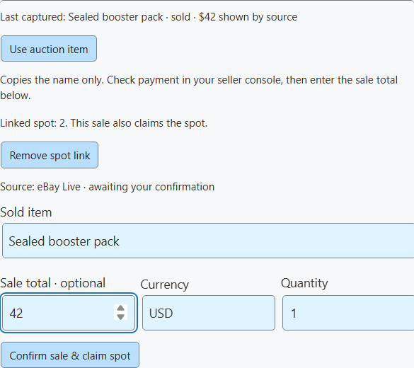
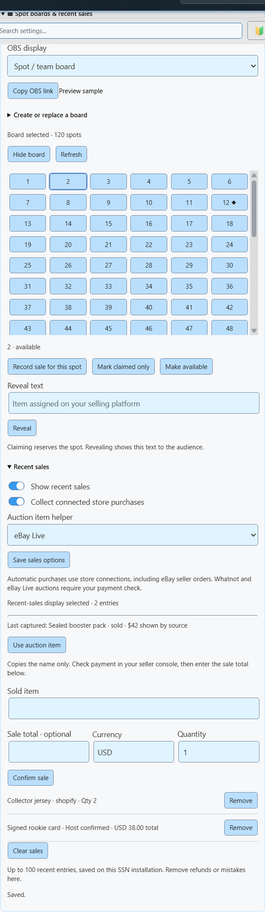

Collect from a store
Turn on Show recent sales and Collect connected store purchases, then save the sales options.
Uses new Shopify, eBay seller, Fourthwall, Ko-fi and Buy Me a Coffee purchase events received by SSN.
Commerce / spot boards & recent sales
Track available spots and keep recent purchases on screen. Controlled from SSN, displayed in OBS.
Spot board

SSN displays your assignments. It does not sell spots or randomly allocate prizes.
Named spots
A team break divides the opened cards by team, player or another named spot.
Claims are host-controlled. SSN does not infer a team purchase from a chat message or an auction ending.


The helper is an operator draft. It never turns a bid or an auction ending into a sale. New auction updates leave your draft alone. Enable Show recent sales to select the audience display; use a separate OBS source for the board and sales if you want both.
For a refund, use Refund & reopen on a linked sale to remove it and release the spot. Remove only removes the sales entry. A replacement board is kept separate from the old board’s sales.
Whatnot and eBay Live capture provides item, bid and auction status. The separate eBay seller connection receives paid-order events for selected listings; it can populate recent sales automatically. Avoid manually confirming the same purchase that your store connection already records. Other automatic sources are Shopify, Fourthwall, Ko-fi and Buy Me a Coffee.
The helper keeps only the last captured item from the selected platform, expires after five minutes without an update, and clears on restart. Verify the item if you have multiple shows open. A blank helper needs a new auction update after enabling it.
eBay: check payment status in the seller console · Whatnot: failed auction payments
Sales history
Keep actual purchases visible after an alert disappears. Choose a compact list, a six-card wall or a strip beside the action.

Turn on Show recent sales and Collect connected store purchases, then save the sales options.
Uses new Shopify, eBay seller, Fourthwall, Ko-fi and Buy Me a Coffee purchase events received by SSN.
Enter the item, optional sale total and currency. Select Confirm sale.
Useful for Whatnot, eBay Live or in-person sales after you check the purchase. These rows say Host confirmed.
Remove mistakes or refunded sales. Clear the wall for a fresh show.
Bids, tips, gifts and sandbox tests do not populate it. Board claims do not create sales.
Connected purchase feeds do not consistently provide item prices, so automatic rows leave them blank. To show a known price, remove that row and confirm it manually. For multiple items, enter the total for that entry, not a per-item price. No listing price, highest bid or donation amount is substituted.
SSN keeps the latest 100 entries on this installation, including through restart. Collection starts when enabled; this is not a full order-history import. Repeated delivery IDs are ignored within the saved 2,000-ID window. Refunds need manual removal.
Buyer names, addresses, payment details and unrevealed item text are not included in this display. Demo links use clearly marked fictional data.

&view=board, sales, wall or ticker chooses the layout. &limit=6 shows up to six recent entries (maximum 24). &prices=0 hides prices. &label=Recently%20sold sets the sales heading. &onlytype=shopify,ebay filters sales sources.
Keep the session, password and relay settings in the copied link. A missing connection or empty display stays transparent; setup messages never appear on the viewer overlay.
Buyers purchase a share of a card break, such as a team’s cards. The board tracks who has claimed each spot.
Whatnot’s breaks guide ↗A numbered or ball-themed grid can track assigned items. Without seeing a specific show, its exact rules are unclear. Whatnot’s Surprise Sets allocate products after a spot sells.
Whatnot’s Surprise Sets guide ↗Use your platform’s approved selling and assignment tools. An SSN board is a presentation layer; it does not replace the platform’s rules or checkout.
These controls extend the existing commerceControl API. SSN, Stream Deck custom API actions and the optional OBS dock read the same getCommerceState response.
{"action":"commerceControl","value":{"command":"boardSpot","data":{"id":"12","status":"claimed"}}}Commands: boardSave (title, style, columns, count or newline-separated labels), boardSpot (id, status, result), boardVisibility (visible), saleAdd (title, optional amount/currency/quantity/platform; optional boardId and spotId to claim a spot), saleRemove (id, optional reopenSpot), salesClear, and salesSettings (visible, automatic, optional auctionSource: whatnot, ebay, or an empty string). Put those fields in data. These edits do not emit purchase events or trigger paid rewards.
In Event Flow, use the existing Products & Support action. Choose a board or sales command and enter its fields in Board / sales fields. String values accept variables such as {subtitle}. Match a confirmed purchase event for sale actions. Turn off automatic collection if your flow adds the same sale manually.